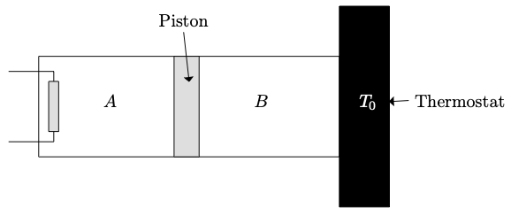

Température de contact
Différents corps placés longtemps au contact Ies uns des autres, finissent par atteindre un état d’équilibre thermique caractérisé par une même température $T_e$.
Pourtant, lorsque l’on touche un objet en marbre ou un objet en bois placés tous deux depuis longtemps dans une même pièce, la sensation est différente : sensation de froid dans le cas du marbre qui n’existe pas pour le contact avec le bois.
-
Si un thermomètre placé dans une pièce indique depuis longtemps $\pu{18 °C}$, quelles sont les températures des objets en marbre et en bois évoqués ci-dessus ? Quelle est la température du corps humain ? Dans quel sens a lieu l’échange d’énergie lors du contact du doigt avec un objet ?
-
Expliquer qualitativement pourquoi une pièce de métal paraît plus froide au contact qu’un objet en bois.
Thermostat
On jette une pierre de masse $m=\pu{10 g}$, à la température $\theta = \pu{25 °C}$ et de capacité thermique massique $c = \pu{835 J.K-1.kg-1}$ dans un lac à la température $\theta’ = \pu{12 °C}$.
- Pourquoi peut-on considérer ici le lac comme un thermostat ?
- Quelle est la température finale de la pierre ?
- Quelle quantité d’énergie thermique la pierre a-t-elle reçu ?
Identifier des transferts d’énergie
Joachim a oublié, en plein soleil, sa canette de soda qui sortait du réfrigérateur à la température de $\pu{5 °C}$. La température ambiante est de $\pu{25 °C}$. Après environ une heure, la température de la canette se stabilise à $\pu{36 °C}$.
-
Décrire les différents transferts d’énergie subis par la boisson au cours de son réchauffement.
-
Lorsque la température est stabilisée, les transferts d’énergie ont-ils cessés ? Justifier.
La canette est en aluminium, sa masse est $m_{\ce{Al}} = \pu{14 g}$. Les $\pu{300 mL}$ de boisson qu’elle contient peuvent être assimilés à de l’eau.
- Calculer la variation d’énergie interne de la canette et du liquide entre sa sortie du réfrigérateur et la stabilisation de sa température.
Données :
- $c(\ce{H2O}) = \pu{4,18e3 J.K-1.kg-1}$ ;
- $c(\ce{Al}) = \pu{897 J.K-1.kg-1}$ ;
- $\rho_{\ce{H2O}} = \pu{1,00 kg.L-1}$.
Corrigé
Calorimétrie
La calorimétrie est l’ensemble des techniques de mesure de transferts thermiques. Elle permet de déterminer des énergies de changement d’état et des capacités thermiques. Un calorimètre à vase de Dewar est un récipient métallique muni d’un couvercle et d’un système d’agitation, dans lequel est placé un vase à double paroi dont les parois sont en verre, argentées et séparées par du vide. Ce vase est appelé vase de Dewar. On peut considérer que le contenu du vase est thermiquement isolé de l’extérieur.
Dans le but de déterminer la capacité thermique massique $c_2$, du cuivre solide, on place dans un calorimètre une masse $m_1 = \pu{80,1 g}$ d’eau liquide. À l’équilibre thermique, la température à l’intérieur du calorimètre est $T_1 = \pu{16,4 °C}$.
Dans une étuve, on chauffe un bloc de cuivre solide de masse $m_2 = \pu{62,3 g}$, sa température est $T_2 = \pu{75,0 °C}$. Très rapidement, on place ce bloc dans l’eau du calorimètre que l’on referme. Quand le nouvel état d’équilibre thermique est atteint, la température à l’intérieur du calorimètre est $T_f = \pu{20,4 °C}$.
-
Justifier la phrase du texte en italique.
-
Exprimer la variation d’énergie interne du système {cuivre} en fonction des températures.
-
Établir le bilan énergétique pour ce système. Quel est le signe des différentes grandeurs qui y apparaissent ?
-
En déduire l’expression de la capacité thermique massique $c_2$, du cuivre et la calculer. On notera $C_{cal}$ la capacité thermique du calorimètre et de ses accessoires (agitateur, thermomètre, etc.).
-
La valeur de $c_2$, lue dans les tables thermodynamiques est $\pu{0,390 J.g-1.°C-1}$. Identifier toutes les sources d’erreur lors de sa détermination. Comment améliorer le résultat ?
- Données:
- Pour l’eau liquide $c_1 = \pu{4,18 J.g-1.°C-1}$ ; pour le calorimètre et ses accessoires $C_{cal} = \pu{8,5 J.°C-1}$.
Corrigé
Détermination de la capacité thermique massique d’un solide
-
Un calorimètre contient $m_1 = \pu{95 g}$ d’eau à $\theta_1 = \pu{20 °C}$. On ajoute $m_2 = \pu{71 g}$ d’eau à $\theta_2 = \pu{50 °C}$. Quelle est la température d’équilibre $\theta_e$ ?
Remarque : on néglige la capacité thermique du vase et de ses accessoires. -
Le même calorimètre contient maintenant $m’_1 = \pu{100 g}$ d’eau à $\theta’_1 = \pu{15 °C}$. On y plonge un échantillon métallique de masse $m = \pu{25 g}$ sortant d’une étuve à $\theta’_2 = \pu{95 °C}$. La température d’équilibre est $\theta = \pu{16,7 °C}$. Calculer la capacité thermique massique $c$ du métal.
La capacité thermique massique de l’eau est $c_0 = \pu{4,18 J.g-1.K-1}$.
Four à micro-ondes
Dans un four à micro-ondes, le magnétron émet des ondes de $\pu{2450 MHz}$ dans la cavité du four où sont placés les aliments.
Ces ondes sont absorbées par les molécules d’eau des aliments, soit directement, soit après réflexion sur les parois de la cavité. Cela provoque une oscillation de ces molécules d’eau qui entraîne une augmentation de la température des aliments. Les parties solides ou n’absorbant pas les micro-ondes chauffent au contact des parties chauffées directement par ces ondes.
- Vérifier que les ondes décrites appartiennent bien au domaine des micro-ondes.
- Quels sont les modes de transfert thermique principalement mis en jeu lors du chauffage d’un aliment avec un four à micro-ondes ?
Avec un four de puissance $\pu{750 W}$ on chauffe $\pu{500 g}$ d’eau liquide. En 1 min 30 s, la température de l’eau varie de $\pu{18,2 °C}$ à $\pu{40,8 °C}$.
- Calculer la variation d’énergie interne de l’eau liquide.
- Calculer l’énergie consommée par le four au cours de son fonctionnement.
- Calculer le rendement de conversion du four.
- Donnée :
- $c(\ce{H2O (liq)}) = \pu{4,18 kJ.kg-1.K-1}$.
Corrigé
Un isolant, la laine de verre
On peut utiliser de la laine de verre pour isoler la toiture d’une maison. Plusieurs épaisseurs sont proposées par les fabricants. Paul et Olivia décident de déterminer la résistance thermique $R_{th1}$, d’une surface $S_1 = \pu{1,0 m2}$ d’une laine de verre 1 d’épaisseur $e_1 = \pu{60 mm}$ et la résistance thermique $R_{th2}$, d’une surface $S_2 = \pu{1,5 m2}$ d’une laine de verre 2 d’épaisseur $e_2 = \pu{240 mm}$.
Paul mesure un flux thermique de $\pu{10 W}$ lorsque la différence de température entre les deux faces de la laine de verre 1 est de $\pu{15 °C}$.
Olivia soumet l’une des faces de la laine de verre 2 à une température $T_A = \pu{10 °C}$ et l’autre face à une température $T_B = \pu{30 °C}$. Elle mesure une énergie transférée de $\pu{36 kJ}$ à travers la laine de verre 2 pendant une durée de $\pu{2,0 h}$.
- Calculer la résistance thermique $R_{th1}$, de la laine de verre 1.
- Calculer la résistance thermique $R_{th2}$, de la laine de verre 2.
Lorsqu’on parle d’isolation thermique, on indique souvent la valeur de la conductivité thermique $\lambda$ d’un matériau. Cette grandeur est liée à la résistance thermique d’une paroi plane de surface $S$ et d’épaisseur $e$ par : $$ \lambda = \dfrac{e}{S\, R_{th}} $$ avec $e$ en m, $S$ en $\pu{m2}$ et $R_{th}$ en $\pu{°C.W-1}$.
- Quelle est l’unité de la conductivité thermique ?
- Calculer les conductivités thermiques respectives $\lambda_1$, et $\lambda_2$ des laines de verre 1 et 2.
- Pourquoi la conductivité thermique caractérise-t-elle un matériau ?
- Exprimer le flux thermique traversant une paroi en fonction de $\lambda$, $S$, $e$ et de l’écart de température entre les faces.
- Comment le flux thermique évolue-t-il lorsque l’on double la surface $S$ de laine de verre ?
- Comment le flux thermique évolue-t-il lorsque l’on double l’épaisseur $e$ de laine de verre ?
- Quels conseils peut-on donner à un particulier faisant construire sa maison afin de limiter les pertes d’énergie par la toiture ?
Corrigé
Annale : Centrale électronucléaire
En France, en 2011 , environ 75 % de la production d’électricité est réalisée dans des centrales électronucléaires. L’énorme énergie libérée par la fission de l’uranium 235 ne peut techniquement pas être entièrement convertie en énergie électrique. Pour évacuer l’énergie non convertie, la centrale doit être équipée d’un circuit d’eau de refroidissement. Les centrales électronucléaires sont donc construites à proximité de rivières, fleuves,
mers ou océans. Ce circuit de refroidissement est un élément crucial pour la sécurité, car, s’il n’est plus alimenté en eau, la température peut augmenter jusqu’à la fusion du cœur du réacteur. C’est ce qui s’est passé lors de
l’accident nucléaire de Fukushima en mars 2011.
Le fonctionnement d’une centrale électronucléaire est modélisé par la chaîne énergétique suivante :
Le cœur du réacteur fournit à la centrale une énergie thermique $Q$. L’eau du circuit de refroidissement est à la température initiale $T = \pu{16 °C}$ et la centrale lui fournit une énergie thermique $Q’$. Le travail électrique fourni par la centrale au réseau électrique est noté $W$. Le rendement de conversion de la centrale vaut 33 %.
-
Établir le bilan énergétique de la centrale en précisant le signe des grandeurs qui interviennent.
-
Comment se traduit la conservation de l’énergie lors du fonctionnement de cette centrale ?
-
Définir le rendement de conversion $\rho$ de cette centrale électronucléaire.
-
Déduire de ce qui précède l’expression du transfert thermique entre la centrale et l’eau du circuit de refroidissement en fonction de $W$ et $\rho$.
-
Quelle est la conséquence pour l’eau du circuit de refroidissement de ce transfert thermique ?
Ce circuit de refroidissement a un débit massique de $\pu{4,2e4 kg.s-1}$.
-
Exprimer la masse d’eau correspondant au fonctionnement de la centrale pendant 10 min.
-
Quelle est l’élévation de la température de cette masse d’eau au cours de cette durée sachant que le travail électrique fourni par la centrale est de $\pu{5,4e11 J}$ ?
-
Quel est l’effet d’une augmentation du débit de l’eau dans le circuit de refroidissement sur la température de cette eau ?
- Donnée :
- $c(\ce{H2O (liq)}) = \pu{4,18 kJ.kg-1.K-1}$.
Corrigé
Annale : Récupérer de l’énergie gratuite dans la nature
L’installation de pompes à 1 chaleur (PAC) pour chauffer des habitations individuelles ou collectives est encouragée par l’ADEME (Agence de l’environnement et de la maîtrise de l’énergie). Ce type de machine thermique permet d’exploiter l’énergie thermique de l’air environnant (aérothermie), du sous-sol (géothermie) ou de nappes d’eau souterraines (hydrothermie).
On souhaite chauffer, à l’aide d’une pompe à chaleur aérothermique, une habitation qui, en trois heures, perd $\pu{874 J}$ par transfert thermique avec l’extérieur.
Au cours d’un cycle de fonctionnement, la pompe à chaleur est alimentée par le biais d’une prise de courant et reçoit un travail $W$. L’air extérieur est à la température $T_{ext}$, la pompe à chaleur y puise une énergie thermique $Q_{ext}$.
L’intérieur de l’habitation, que l’on souhaite maintenir à la température $T_{int}$, reçoit de la part de la pompe à chaleur un transfert thermique $Q_{int}$.
-
Pour le système {pompe à chaleur}, établir le bilan énergétique durant un cycle de fonctionnement.
-
Le coefficient de performance (COP) de la pompe à chaleur est défini comme la valeur absolue du rapport de la puissance thermique fournie par la machine et de la puissance électrique nécessaire à son alimentation.
Exprimer le coefficient de performance de la pompe à chaleur en fonction des différentes grandeurs apparues dans le bilan énergétique. -
Quelle énergie électrique consomme une pompe à chaleur dont le coefficient de performance vaut 4 lors du chauffage pendant 3 heures de l’habitation décrite ?
-
Pourquoi l’ADEME encourage-t-elle l’installation de pompes à chaleur ?
Corrigé
Annale : Double ou simple vitrage ?
Le vitrage d’une fenêtre d’immeuble a une surface $S = \pu{2,4 m2}$. ll est constitué de deux vitres d’une épaisseur $e_1 = \pu{4,0 mm}$ chacune, séparées par une couche d’air d’épaisseur $e_2 = \pu{16 mm}$.
Le graphique ci-dessous représente l’évolution de la température dans un double vitrage en fonction de la distance $x$ mesurée depuis la face extérieure. Les températures des deux faces externes du double vitrage sont constantes au cours du temps ; la valeur $\varphi$ du flux thermique qui traverse l’ensemble est de $\pu{62,2 W}$.
-
Quelle est la température de l’air extérieur et celle de l’air contenu dans l’immeuble?
-
Calculer la température de la face intérieure de la vitre en contact avec l’air extérieur à l’immeuble. La courbe confirme-t-elle ce résultat ?
-
Calculer la résistance thermique de la paroi vitrée.
-
On remplace le double vitrage par un simple vitrage d’épaisseur $e_3 = \pu{24 mm}$.
Dans les mêmes conditions de températures extérieure et intérieure à l’immeuble, calculer le flux thermique qui traverse ce vitrage. -
Quel est l’intérêt du double vitrage par rapport au simple vitrage ?
-
Quelle est la valeur de la résistance thermique des $\pu{16 mm}$ d’air ? Conclure.
-
Comparer la résistance thermique de la paroi en double vitrage avec celle du mur en béton de même surface et de $\pu{20 cm}$ d’épaisseur. Conclure.
- Données :
- Flux thermique $$ \varphi = \dfrac{Q}{\Delta t} = \dfrac{\vert T_1 - T_2 \vert}{R_{th}} $$
- Résistance thermique d’une paroi de $\pu{2,4 m2}$ :
| Matériau | $R_{th} (\pu{K.W-1})$ |
|---|---|
| Vitre de 4 mm d’épaisseur | $\pu{1,4e-3}$ |
| Vitre de 24 mm d’épaisseur | $\pu{8,3e-3}$ |
| Béton de 20 cm d’épaisseur | $\pu{0,45}$ |
Corrigé
Échauffement d’une bille en mouvement dans l’air (Difficile)
Une bille métallique, de capacité thermique massique $c$ (supposée constante), est lancée vers le haut avec une vitesse $v_0$, dans le champ de pesanteur $\vec{g}$ supposé uniforme. Elle atteint une altitude $h$, puis redescend.
-
Déterminer l’altitude maximale $h_0$ atteinte par la bille si on néglige les forces de frottement fluide entre l’air et la bille.
Exprimer $h_0$ en fonction de $v_0$ et $g$. -
On constate que l’altitude réelle $h$ est inférieure à $h_0$, à cause des forces de frottement.
Exprimer la variation de température $\Delta T$ de cette bille entre l’instant où elle est lancée et l’instant où elle atteint son point le plus haut en supposant que :- l’on néglige toute variation de volume de la bille ;
- l’air ambiant reste macroscopiquement au repos ;
- le travail des forces de frottement se dissipe pour moitié dans l’air ambiant et pour moitié dans la bille. Exprimer $\Delta T$ en fonction de $h_0$, $h$, $g$ et $c$.
-
Calculer $h_0$, puis $\Delta T$.
- Données :
- $g = \pu{9,81 m.s-2}$ ; $c = \pu{0,4 kJ.kg-1.°C-1}$ ; $v_0 = \pu{10 m.s-1}$ ; $h=\pu{5 m}$.
Corrigé
Équivalence travail - chaleur (difficile)
Une auto de masse $M = \pu{836 kg}$ roule à la vitesse $v = \pu{20 m.s-1}$ (72 km/h) et s’arrête brusquement à l’aide de ses quatre freins à disques. En assimilant ces derniers à des cylindres de rayon $R = \pu{10 cm}$, d’épaisseur $e = \pu{1 cm}$, de masse volumique $\rho = \pu{8 g.cm-3}$ et de capacité thermique massique $c = \pu{0,42 J.g-1.K-1}$, calculer leur élévation de température en supposant que toute l’énergie thermique est absorbée par les disques.
Réponse
On suppose le système {voiture + environnement} isolé. On a donc : $$ \Delta E_t = \Delta E_M(\text{voiture}) + \Delta U(\text{voiture}) + \Delta U(\text{environnement}) = 0 $$
Remarque : on considère que $\Delta E_M(\text{environnement}) = 0$ car macroscopiquement rien n’est modifié au niveau de l’environnement.
Le freinage ne dure pas très longtemps, on peut donc supposer que les échanges thermiques entre la voiture et l’environnement ne sont pas importants (la conduction n’est pas très efficace et la convection limitée ici). On en déduit donc que $\Delta U(\text{environnement}) = 0$.
Finalement, $$ \Delta E_M(\text{voiture}) + \Delta U(\text{voiture}) = 0 \iff \Delta U(\text{voiture}) = -\Delta E_M(\text{voiture}) $$ L’énergie mécanique perdue par la voiture est transformée en énergie interne.
Au niveau de la voiture, ce sont les disques qui voient leur énergie interne augmenter, on peut donc écrire $$ \Delta U(\text{voiture}) = \Delta U(\text{4 disques}) $$
Finalement, $$ m c \Delta \theta = - (0 - \dfrac{1}{2} Mv_0^2 ) $$ où $m$ est la masse des 4 disques. Si on utilise les données de l’exercice, $m = 4 \pi R^2 e \rho$ (où $\pi R^2 e$ est le volume de chaque disque et $\pi R^2 e \rho$ la masse de chaque disque) et $$ \Delta \theta = \dfrac{Mv_0^2}{2 \times 4 \pi R^2 e \rho c} $$
A.N. $\Delta \theta = \dfrac{\pu{836 kg} \times (\pu{20 m.s-1})^2}{2 \times 4 \times \pi \times (\pu{10 cm})^2 \times \pu{1 cm} \times \pu{8 g.cm-3} \times \pu{0,42 J.g-1.K-1}} = \pu{4e1 K} = \pu{4e1 °C} $
Cette élévation de température n’est pas très importante.
En fait, si le freinage est brusque, l’élévation l’énergie ne se propage pas dans toute la masse des disques (faute de temps) et, localement, l’élévation de température peut être beaucoup plus importante.
Apport d’énergie thermique par une résistance électrique
Un cylindre fermé horizontal est divisé en deux compartiments $A$ et $B$ de même volume $V_0$ par un piston coulissant librement sans frottement. $A$ et $B$ contiennent chacun une mole de gaz parfait à la pression $P_0$ et à la température $T_0$. On note $c_{V,m}$ la capacité thermique molaire volumique du gaz parfait dans l’enceinte (un gaz parfait n’est pas incompressible mais on peut écrire $\Delta U = n\, c_{V,m}\, \Delta T$).
Le piston, la surface latérale du cylindre et la surface de base $S_A$ du compartiment $A$ sont athermanes (ne transmet pas l’énergie thermique). La surface de base $S_B$ du compartiment $B$ est diathermane (transmet l’énergie thermique).
Le compartiment $A$ est porté très lentement à la température $T_1$ à l’aide d’une résistance chauffante, le compartiment $B$ reste à $T_0$ par contact thermique avec un thermostat à la température $T_0$.
-
Exprimer les volumes $V_A$, $V_B$ et la pression finale $P_f$ en fonction de $T_1$, $T_0$ et $V_0$ correspondant à la position d’équilibre du piston.
-
Quelle est la variation d’énergie interne du gaz à l’intérieur de $A$ et de $B$ ? En déduire la variation d’énergie interne du système ${A + B}$.
La résistance chauffante et le piston sont exclus du système. -
On montre que le travail reçu par $B$ (travail des forces de pression lorsque le volume de $A$ augmente) a pour expression : $$ W = R\, T_0\, \ln \left( \dfrac{T_0 + T_1}{2\, T_0} \right) $$ En déduire l’expression du transfert thermique $Q_1$ que reçoit $B$ de la part du thermostat (on exprimera $Q_1$ en fonction de $T_0$, $T_1$ et $R$).
Cette énergie thermique est-elle effectivement reçue ou est-elle cédée ? -
Déterminer l’expression du transfert thermique $Q_2$ que reçoit $A$ de la résistance électrique en fonction de $T_0$, $T_1$, $R$ et $c_{V,m}$.